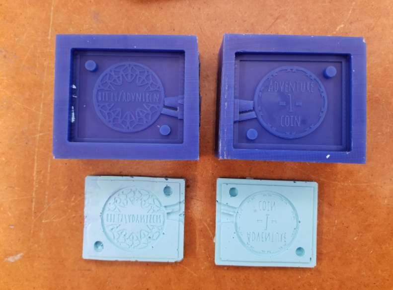
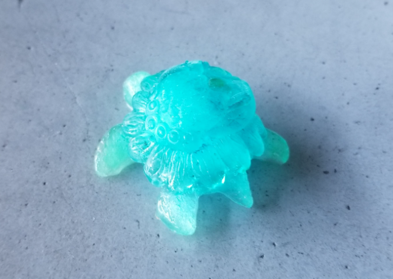

Molding & Casting Workshop
Molding & Casting
For this workshop, please collect the following:
- Sorta-Clear 37 (Parts A and B)
- Stir stick
- Vinyl gloves
- Safety glasses
- Pattern to mold
- Casting medium (water, chocolate, butter, jell-o, wax, plaster, bizmuth-tin, etc.)
Not required, but maybe helpful:
- Cardboard
- Hot glue
- Duct tape
- Scissors / x-acto
- Other asst. containers

SORTA Clear 37 silicone rubber is FOOD SAFE and can be used for culinary applications including casting chocolate and other confections.
Safety – Use in a properly ventilated area (“room size” ventilation). Wear safety glasses, long sleeves and rubber gloves to minimize contamination risk. Wear vinyl gloves only. Latex gloves will inhibit the cure of the rubber.

Find a pattern to cast. Describe its geometry. Will it require a one-part mold or a two-part mold? Does it float? How will you hold it in place while curing?

Mix part B first. Combine equal amounts of parts A and B.

The pot life is ~25 minutes. Fill a flask (container) with the mixture and place the pattern inside.

Take care to ensure the pattern doesn't float or sink. If it does, you may want to use sticks hold it in place while the mold cures.

Place the mold in a warm place and allow it to cure for at least 4 hours (waiting a day doesn't hurt).
It took some care to cut the pagoda out of the cylindrical mold. I first cut one "corner" of the pagoda free, pressing the knife gently into the recesses and then spreading the two sides, tearing any bits of material that remain connected. I also extended the cut on the top and bottom of the cylinder, leaving just the back side attached to function as a hinge.

You may also need to include a sprue (pour hole) and a vent to allow air to evacuate the mold as the casting medium is poured in.
Above, I've cut a vent hole in the cured mold with an x-acto blade. (The "sprue" hole is formed by the chopstick that the pagoda was attached to). However, I didn't really think this through -- putting the vent here causes some casting medium to leak out. I should have routed the vent upwards, to the same surface as the sprue hole.
Here is an example of a two-part mold with the vent and sprue cast into the pattern.
(See Rob's example for another method, where a vent and sprue were modeled onto the pattern using clay).

After using a knife to cut away excess silicone, the pattern can be removed from the mold.

Time to heat up some casting medium. I've used a bar of chocolate (the high cacao kind without any sugar, in case that's relevant). Update: Tempering chocolate is a difficult task that I have mostly glossed over. I tried these molds with a melted Hershey's bar, which remained much more viscous than the high cacao variety (I'm assuming some combination of the sugar and preservatives). Hershey's might be fine for a very simple one-part mold, but not for detailed molds with narrow features.

I tapped and stirred the warm chocolated to try to remove air bubbles (I didn't use a vaccum chamber or anything like that).

Final result. There was a minor fin detachment, but that could have been avoided if I'd been more careful.

Removing the pagoda was a bit trickier, but came out in one piece.

Final results (below). Notice the air bubbles in the pagoda corners.

Bonus: ice turtle.
